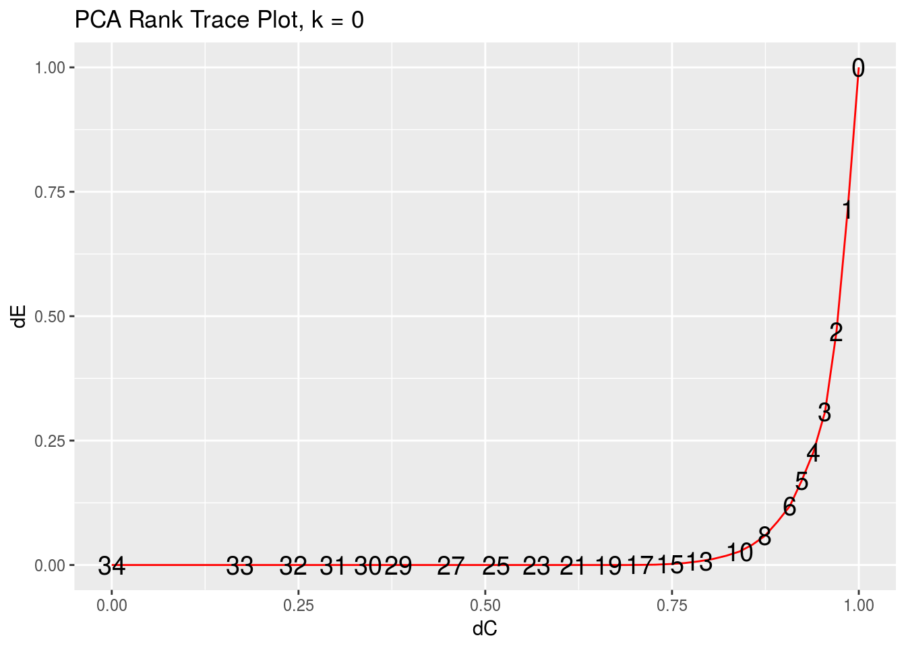
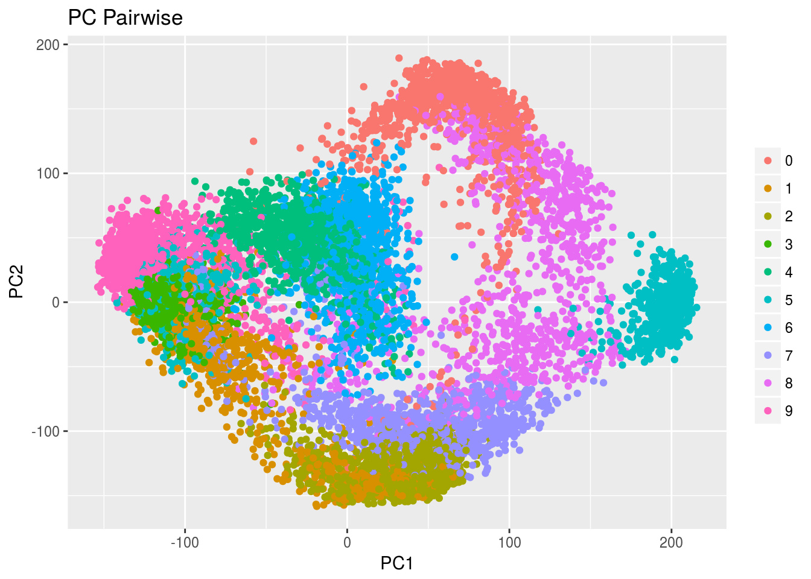
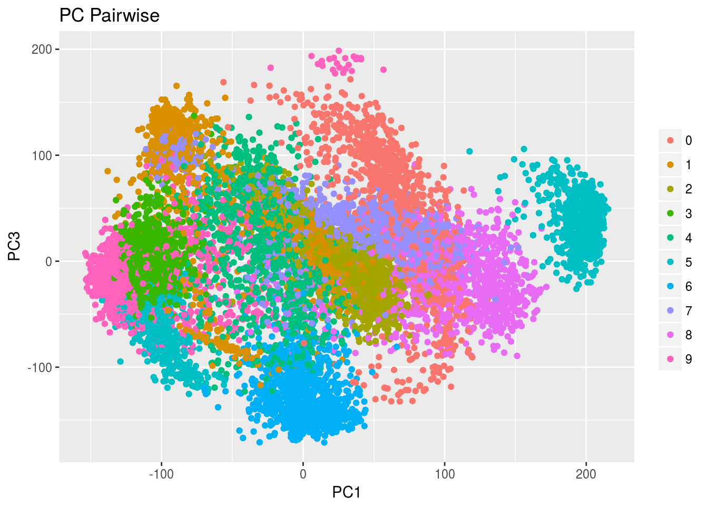
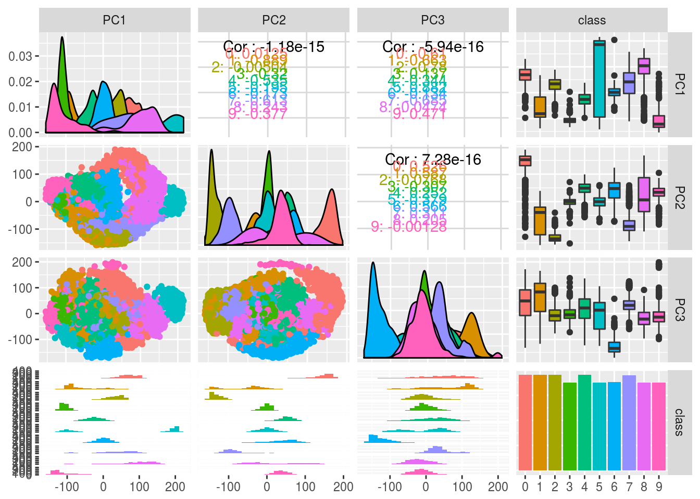

rrr for Principal Component Analysis\[ \begin{aligned} \mathbf{A}^{\left(t\right)} & = \left(\mathbf{v}_1, \dots, \mathbf{v}_t\right) \\ \mathbf{B}^{\left(t\right)} & = \mathbf{A}^{\left(t\right) \tau} \\ \boldsymbol{\mu}^{\left(t\right)} & = \left(\mathbf{I}_r - \mathbf{A}^{\left(t\right)}\mathbf{B}^{\left(t\right)}\right)\boldsymbol{\mu}_X \\ \end{aligned} \]
where \(\mathbf{v}_j = \mathbf{v}_j \left(\mathbf{\Sigma}_{XX}\right)\) is eigenvector associated with the \(j\)th largest eigenvalue of \(\mathbf{\Sigma}_{XX}.\)
The best reduced-rank approximation to the original \(\mathbf{X}\) is
\[ \begin{aligned} \hat{\mathbf{X}}^{\left(t\right)} & = \boldsymbol{\mu}^{\left(t\right)} + \mathbf{A}^{\left(t\right)}\mathbf{B}^{\left(t\right)} \mathbf{X} \end{aligned} \]
pendigits Data Setdata(pendigits)
digits <- as_data_frame(pendigits)
glimpse(digits)## Observations: 10,992
## Variables: 36
## $ V1 <int> 47, 0, 0, 0, 0, 100, 0, 0, 13, 57, 74, 48, 100, 91, 0, 35,...
## $ V2 <int> 100, 89, 57, 100, 67, 100, 100, 39, 89, 100, 87, 96, 100, ...
## $ V3 <int> 27, 27, 31, 7, 49, 88, 3, 2, 12, 22, 31, 62, 72, 54, 38, 5...
## $ V4 <int> 81, 100, 68, 92, 83, 99, 72, 62, 50, 72, 100, 65, 99, 100,...
## $ V5 <int> 57, 42, 72, 5, 100, 49, 26, 11, 72, 0, 0, 88, 36, 0, 81, 1...
## $ V6 <int> 37, 75, 90, 68, 100, 74, 35, 5, 38, 31, 69, 27, 78, 87, 88...
## $ V7 <int> 26, 29, 100, 19, 81, 17, 85, 63, 56, 25, 62, 21, 34, 23, 8...
## $ V8 <int> 0, 45, 100, 45, 80, 47, 35, 0, 0, 0, 64, 0, 54, 59, 50, 66...
## $ V9 <int> 0, 15, 76, 86, 60, 0, 100, 100, 4, 75, 100, 21, 79, 81, 84...
## $ V10 <int> 23, 15, 75, 34, 60, 16, 71, 43, 17, 13, 79, 33, 47, 67, 12...
## $ V11 <int> 56, 37, 50, 100, 40, 37, 73, 89, 0, 100, 100, 79, 64, 100,...
## $ V12 <int> 53, 0, 51, 45, 40, 0, 97, 99, 61, 50, 38, 67, 13, 39, 0, 9...
## $ V13 <int> 100, 69, 28, 74, 33, 73, 65, 36, 32, 75, 84, 100, 19, 79, ...
## $ V14 <int> 90, 2, 25, 23, 20, 16, 49, 100, 94, 87, 0, 100, 0, 4, 22, ...
## $ V15 <int> 40, 100, 16, 67, 47, 20, 66, 0, 100, 26, 18, 0, 0, 21, 100...
## $ V16 <int> 98, 6, 0, 0, 0, 20, 0, 57, 100, 85, 1, 85, 2, 0, 24, 17, 7...
## $ V17 <int> 8, 2, 1, 4, 1, 6, 4, 0, 5, 0, 9, 8, 5, 9, 7, 3, 3, 9, 2, 2...
## $ V18 <int> 1, 2, 3, 6, 3, 4, 6, 10, 7, 5, 6, 1, 9, 6, 2, 9, 9, 9, 2, ...
## $ V19 <int> 47, 0, 0, 0, 0, 100, 0, 0, 13, 57, 74, 48, 100, 91, 0, 35,...
## $ V20 <int> 100, 89, 57, 100, 67, 100, 100, 39, 89, 100, 87, 96, 100, ...
## $ V21 <int> 27, 27, 31, 7, 49, 88, 3, 2, 12, 22, 31, 62, 72, 54, 38, 5...
## $ V22 <int> 81, 100, 68, 92, 83, 99, 72, 62, 50, 72, 100, 65, 99, 100,...
## $ V23 <int> 57, 42, 72, 5, 100, 49, 26, 11, 72, 0, 0, 88, 36, 0, 81, 1...
## $ V24 <int> 37, 75, 90, 68, 100, 74, 35, 5, 38, 31, 69, 27, 78, 87, 88...
## $ V25 <int> 26, 29, 100, 19, 81, 17, 85, 63, 56, 25, 62, 21, 34, 23, 8...
## $ V26 <int> 0, 45, 100, 45, 80, 47, 35, 0, 0, 0, 64, 0, 54, 59, 50, 66...
## $ V27 <int> 0, 15, 76, 86, 60, 0, 100, 100, 4, 75, 100, 21, 79, 81, 84...
## $ V28 <int> 23, 15, 75, 34, 60, 16, 71, 43, 17, 13, 79, 33, 47, 67, 12...
## $ V29 <int> 56, 37, 50, 100, 40, 37, 73, 89, 0, 100, 100, 79, 64, 100,...
## $ V30 <int> 53, 0, 51, 45, 40, 0, 97, 99, 61, 50, 38, 67, 13, 39, 0, 9...
## $ V31 <int> 100, 69, 28, 74, 33, 73, 65, 36, 32, 75, 84, 100, 19, 79, ...
## $ V32 <int> 90, 2, 25, 23, 20, 16, 49, 100, 94, 87, 0, 100, 0, 4, 22, ...
## $ V33 <int> 40, 100, 16, 67, 47, 20, 66, 0, 100, 26, 18, 0, 0, 21, 100...
## $ V34 <int> 98, 6, 0, 0, 0, 20, 0, 57, 100, 85, 1, 85, 2, 0, 24, 17, 7...
## $ V35 <int> 8, 2, 1, 4, 1, 6, 4, 0, 5, 0, 9, 8, 5, 9, 7, 3, 3, 9, 2, 2...
## $ V36 <int> 1, 2, 3, 6, 3, 4, 6, 10, 7, 5, 6, 1, 9, 6, 2, 9, 9, 9, 2, ...pca_gof(digits_features) %>% round(4)## [1] 0.7143 0.4689 0.3080 0.2272 0.1695 0.1181 0.0870 0.0589 0.0408 0.0270
## [11] 0.0186 0.0120 0.0075 0.0039 0.0020 0.0007 0.0003 0.0000 0.0000 0.0000
## [21] 0.0000 0.0000 0.0000 0.0000 0.0000 0.0000 0.0000 0.0000 0.0000 0.0000
## [31] 0.0000 0.0000 0.0000 0.0000pca_rank_trace_plot()args(pca_rank_trace)## function (x, type = "cov", k = 0)
## NULLargs(pca_rank_trace_plot)## function (x, type = "cov", k = 0, interactive = FALSE)
## NULLpca_rank_trace() and pca_rank_trace_plot() are special of rank_trace() and rank_trace_plot(), respectively, when \(\mathbf{Y} \equiv \mathbf{X}\) and \(\mathbf{\Gamma} = \mathbf{I}_r\).
pca_rank_trace(digits_features)## # A tibble: 35 × 3
## rank delta_C delta_residuals
## <int> <dbl> <dbl>
## 1 0 1.0000000 1.00000000
## 2 1 0.9851844 0.71433119
## 3 2 0.9701425 0.46892679
## 4 3 0.9548637 0.30799061
## 5 4 0.9393364 0.22717008
## 6 5 0.9235481 0.16953413
## 7 6 0.9074852 0.11807750
## 8 7 0.8911328 0.08697453
## 9 8 0.8744746 0.05887330
## 10 9 0.8574929 0.04079132
## # ... with 25 more rowspca_rank_trace_plot(digits_features)
pc_pairwise_plot()args(pc_pairwise_plot)## function (x, pc_x = 1, pc_y = 2, class_labels = NULL, rank = "full",
## type = "cov", interactive = FALSE)
## NULLA common PCA method of visualization for diagnostic and analysis purposes is to plot the \(j\)th sample PC scores against the \(k\)th PC scores,
\[ \begin{aligned} \left(\xi_{ij}, \xi_{ik}\right) \\ \left(\hat{\mathbf{v}}_j^\tau \mathbf{X}_i, \hat{\mathbf{v}}_k^\tau\right), \quad i = 1,2, \dots, n \end{aligned} \]
Since the first two principal components will capture the most variance – and hence the most useful information – of all possible pairs of principal components, we typically would set \(j = 1, k = 2\) and plot the first two sample PC scores against each other. In rrr this is the default.
pc_pairwise_plot(digits_features, class_labels = digits_class)
We can set the \(x\)- and \(y\)-axes to whichever pairs of PC scores we would like to plot by changing the pc_x and pc_y arguments.
pc_pairwise_plot(digits_features, pc_x = 1, pc_y = 3, class_labels = digits_class)
pc_allpairs_plot()args(pc_allpairs_plot)## function (x, rank, type = "cov", k = 0, class_labels = NULL)
## NULLpc_allpairs_plot(digits_features, rank = 3, class_labels = digits_class)## `stat_bin()` using `bins = 30`. Pick better value with `binwidth`.
## `stat_bin()` using `bins = 30`. Pick better value with `binwidth`.
## `stat_bin()` using `bins = 30`. Pick better value with `binwidth`.
#pc_plot_3D(digits_features, class_labels = digits_class)rrpcaargs(rrpca)## function (x, rank = "full", type = "cov", k = 0)
## NULLdigits_class <- digits %>% dplyr::select(V35)
digits_features <- digits %>% dplyr::select(-V5, -V6)
digits_pca <- rrpca(digits_features)
digits_pca## $means
## # A tibble: 34 × 1
## value
## * <dbl>
## 1 38.81432
## 2 85.12027
## 3 40.60562
## 4 83.77420
## 5 51.22025
## 6 44.49900
## 7 56.86854
## 8 33.69596
## 9 60.51638
## 10 34.82651
## # ... with 24 more rows
##
## $C
## # A tibble: 34 × 34
## V1 V2 V3 V4 V5
## <dbl> <dbl> <dbl> <dbl> <dbl>
## 1 1.000000e+00 -1.942890e-16 1.526557e-16 1.021318e-16 -2.775558e-16
## 2 -1.942890e-16 1.000000e+00 4.414871e-16 -2.914335e-16 -1.318390e-16
## 3 1.526557e-16 4.414871e-16 1.000000e+00 1.231654e-16 1.222980e-16
## 4 1.021318e-16 -2.914335e-16 1.231654e-16 1.000000e+00 -4.145989e-16
## 5 -2.775558e-16 -1.318390e-16 1.222980e-16 -4.145989e-16 1.000000e+00
## 6 -1.110223e-16 -5.551115e-17 6.591949e-17 -4.718448e-16 1.179612e-16
## 7 -1.114560e-16 3.816392e-17 9.194034e-17 3.400058e-16 -5.377643e-17
## 8 2.324529e-16 -1.110223e-16 1.023487e-16 -2.706169e-16 1.214306e-16
## 9 -2.081668e-17 1.106428e-16 -3.489098e-17 7.047314e-17 -4.069282e-16
## 10 2.498002e-16 -4.163336e-17 -5.637851e-17 -2.428613e-17 1.405126e-16
## # ... with 24 more rows, and 29 more variables: V6 <dbl>, V7 <dbl>,
## # V8 <dbl>, V9 <dbl>, V10 <dbl>, V11 <dbl>, V12 <dbl>, V13 <dbl>,
## # V14 <dbl>, V15 <dbl>, V16 <dbl>, V17 <dbl>, V18 <dbl>, V19 <dbl>,
## # V20 <dbl>, V21 <dbl>, V22 <dbl>, V23 <dbl>, V24 <dbl>, V25 <dbl>,
## # V26 <dbl>, V27 <dbl>, V28 <dbl>, V29 <dbl>, V30 <dbl>, V31 <dbl>,
## # V32 <dbl>, V33 <dbl>, V34 <dbl>
##
## $PC
## # A tibble: 34 × 34
## PC1 PC2 PC3 PC4 PC5
## <dbl> <dbl> <dbl> <dbl> <dbl>
## 1 -0.03387102 0.13029152 -0.36925608 -0.0557669954 -0.455824378
## 2 0.02889750 0.04894617 -0.10146162 0.0297692102 -0.052485351
## 3 -0.10713998 -0.10659910 -0.19971425 -0.1867322127 0.086694722
## 4 -0.05936310 -0.13286056 -0.12306986 0.0003095884 -0.045021414
## 5 -0.08459809 -0.06412648 0.33637840 -0.2417182761 -0.230328973
## 6 -0.26801027 -0.13483718 0.08883391 0.0108538776 -0.024645693
## 7 -0.22122135 0.18873574 0.21627977 0.0448592607 -0.252691425
## 8 -0.19776810 0.07579367 0.19075917 0.0530807274 -0.014630565
## 9 -0.22462146 0.32671341 -0.05358243 0.1570188597 0.222779203
## 10 0.05618133 0.21562910 0.20521911 0.0728999493 -0.002345969
## # ... with 24 more rows, and 29 more variables: PC6 <dbl>, PC7 <dbl>,
## # PC8 <dbl>, PC9 <dbl>, PC10 <dbl>, PC11 <dbl>, PC12 <dbl>, PC13 <dbl>,
## # PC14 <dbl>, PC15 <dbl>, PC16 <dbl>, PC17 <dbl>, PC18 <dbl>,
## # PC19 <dbl>, PC20 <dbl>, PC21 <dbl>, PC22 <dbl>, PC23 <dbl>,
## # PC24 <dbl>, PC25 <dbl>, PC26 <dbl>, PC27 <dbl>, PC28 <dbl>,
## # PC29 <dbl>, PC30 <dbl>, PC31 <dbl>, PC32 <dbl>, PC33 <dbl>, PC34 <dbl>